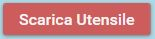
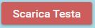
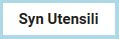

On the “Tool Magazine” page, the list of defined tools can be checked and tools can be added, edited or deleted. The commands listed below can also be executed.
Tool magazine commands
Create tool Adds a new tool.
Delete tool Deletes the selected tool.
Change tool Starts the tool-change command.

Unload tool Starts the tool-unloading command.
Force tool Manually sets the tool selected from the list as the mounted tool.
Force no tool mounted Manually sets the machine status to indicate that no tool is mounted.
Measure tool Sends the tool-measurement request command.

Unload head Unloads the mounted head, first unloading the tool if one is present.
Manual tool change Indicates that the tool is being changed manually.
Corrector list Opens the list of correctors.

Synchronise tools Sends the tool list to CadCam or Eureka.